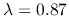
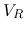
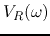
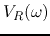
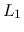
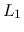
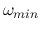

Next: About this document ...
E84 Midterm Exam 2
- Take home, open everything except discussion.
- Mark your start and end times. Don't spend more than 2 hours.
- Due Wednesday (12/11) in class.
- Mark your name and question number clearly on top of each page.
Indicate the total number of pages submitted.
- When solving a problem, list all the steps. Box your final answer.
- Problem 1. (50 points)
- (a) The figure below shows a fluorescent light fixture and
its model, a resistor and an inductor in series. Assume the real power
of the fluorescent light is 100 Watts when connected to 110V 60Hz voltage
supply, and its power factor is . Find the resistance
R and inductance L of the fixture.
- (b) Ten fluorescent lights discussed above and eleven
100-watt incandescent lights are connected in parallel to a 110V 60Hz
voltage supply. Find the power factor of this load.

- Problem 2. (50 points)
- (a) Find the frequency response function of the circuit shown in
the figure, i.e., find the ratio of the voltage  across load resistor
 and the input sinusoidal voltage
and the input sinusoidal voltage  .
.
- (b) Similar to a simple RCL series resonant circuit, this circuit
can be used as a band-pass filter to pass signals around its resonant
frequency. Find this resonant frequency
 at which
 is maximized in terms of the component values ,
at which
 is maximized in terms of the component values ,  ,
 and
,
 and  .
.
- (c) Different from the simple RCL series resonant circuit, this
circuit also has a stop band, i.e., around a certain freqnecy
 the output voltage is zero. Find this frequency
also in terms of the circuit components.
- (d) Given
 and the two inductors are identical,
determine the values of and
and the two inductors are identical,
determine the values of and  , so that
, so that
 . What is the corresponding stop frequency ?
. What is the corresponding stop frequency ?

Next: About this document ...
Ruye Wang
2014-11-06